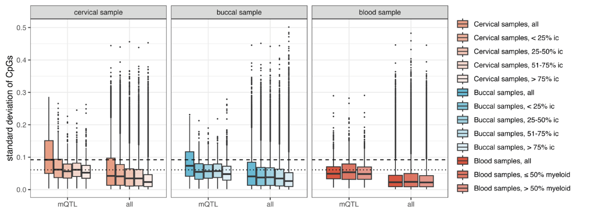
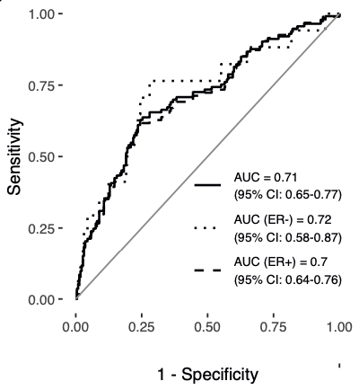
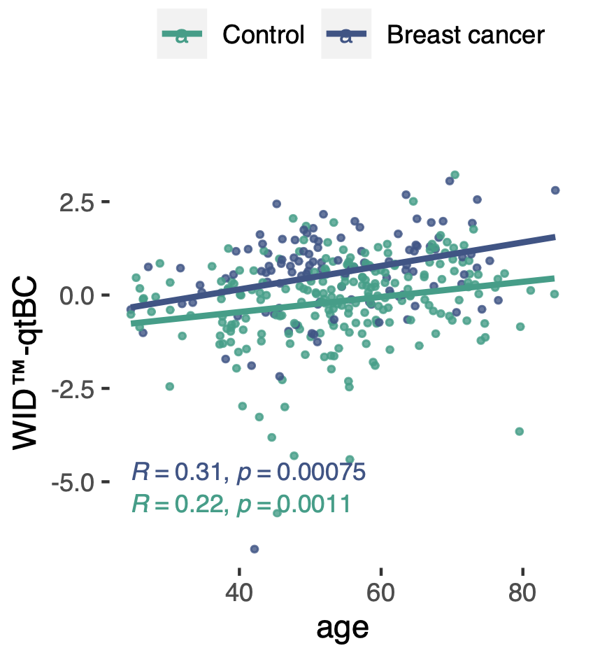

Investigating the interaction between genetic breast cancer risk and epigenome
Research into genetic risk factors for breast cancer has yielded polygenic risk scores (PRSs). However, genetic risk factors such as polygenic risk scores are static. To follow a person’s changing environment and health, dynamic markers are required. In a new manuscript published in npj Precision Oncology, we investigated the interaction between the epigenome and genetic background at methylation quantitative trait loci (mQTLs) associated with breast cancer.
Our results indicate that although methylation levels at methylation QTLs are genetically determined, they show variability across cell types. This variability may carry information about non-heritable changes in risk. For breast cancer, cervical samples with a high epithelial cell content carried the largest amount of variability.

A linear combination of methylation values at 104 mQTL sites, termed the ‘Women’s cancer risk identification - quantitative trait index for breast cancer’, or simply WID™-qtBC, detects current cancer cases with an AUC of 0.71 in cervical samples.
The methylation-based WID™-qtBC was modified by age and other nonheritable factors associated with breast cancer risk, including body mass index or age at menopause. Interestingly, the correlation between the polygenic risk score (PRS) and mQTL index was weak. However, women with both a high PRS and high WID-qtBC score exhibited a 9.6-fold increased risk for being diagnosed with breast cancer, indicating an interaction of genetic and non-genetic risk factors at the level of the epigenome.
 
Our data suggest that the WID™-qtBC alone or in combination with the PRS may improve breast cancer risk stratification compared to current methods, but further research is required to validate our findings.
Read the article: